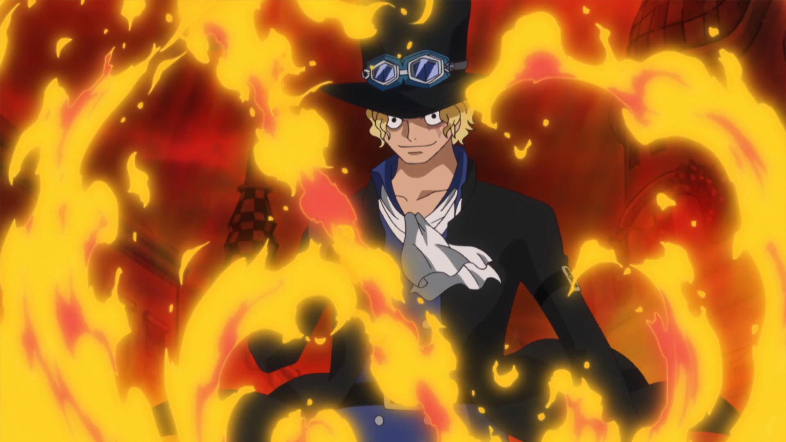

Cain
Historia
Nascido numa família de maestros e músicos ele sempre gostou do público e de atenção mais seu gosto musical era diferente do resto de sua família, embora sua família não seja influente e nem muita famosa ela é muito fiel as suas convicções e crenças, mas Steeve tinha umas ideias diferentes para seu gosto musical e quando ele falou para sua família que gostava de rock eles sentiram um desgosto imenso e só o deserdou pois ele era incrível como músico ainda sim eles pararam de o apoiar e mudaram seu para Cain assim como o primeiro assassino do mundo ele foi o primeiro "assassino" do legado da família , nessa época ele não podia fazer nada mais mesmo sem o apoio da sua família ele ainda conseguiu criar um banda "famosa" e ganhar o bastante para não precisar da família nunca mais. Durante um ensaio que fazia em casa ele ficou tão concentrado e imerso que teve uma visão de uma vida que era dele embora saiba que signifique alguma coisa ele ignoro esse "sonho" até chegar o dia da sua estréia em um palco grande , mais antes de poder começar teve uma explosão no meio da plateia e logo em seguida saíram várias pessoas encapuzadas fazendo o palco todo de refém , horas depois a polícia consegue resolver a situação e quando estavam levando um deles preso Cain escutou ele falar "pelos lordes Titãs, aqueles que merecem o mundo " nesse momento ele percebe o pesso do "sonho" que teve e jurou vingança por terem estragado sua grande estréia.
curiosiade:
Ele sempre anda com sua guitarra.
Ele não perdeu ninguém importante mais teve muitas mortes e feridos da plateia.
Embora ele seja um maestro e músico ele tem um corpo forte e resistente.
Ele é proficiente em rifles e na arte da espada.
Embora ele não tenha nenhum apego pelas pessoas ele se importa muito com quem vê ele fazendo suas apresentações.
Ele é sempre meio descontraído e ajé como se não ligasse pra nada até que isso afete sua "arte".
Deus
Apolo
Status
- Hp: 5(+10)
- Hb: 15
- Dr:5
- força: 1(4-3)
- Destreza: 4(1+3)
- Constituição: 1
- Inteligencia: 2
- sabedoria: 2
- carisma: 3
Resistencia
- Fortitude: 1
- Reflexo: 4
- vontade: 5
Pericias
- Musico: 2
- Atletismo: 1
- Atuação: 3
- Iniciativa: 1
- Sobrevivencia: 1
- Rifle de precisão: 2
- Arma corpo a corpo: 2
Habilidades
Atirador veloz: Vantagem na hora do saque da arma
Poses
- Conta: 8kk
- Patrimonio: 78kk
- Carros: 10
- Motos: 5
- Helicoptero: 2
- Barcos: 2
- cassas: 30